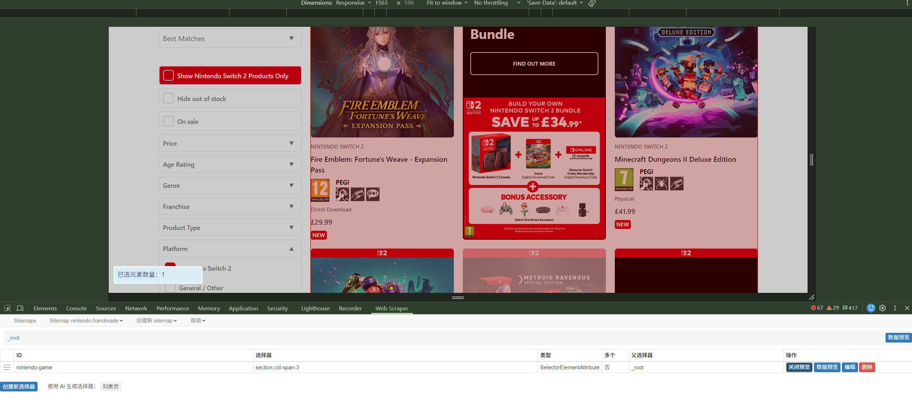

Weekly Reflections
Week 3
This week's workshop focused on web scraping. I am particularly curious about how the term is expressed. In Chinese schools, I previously encountered the term “web crawler”, while in English it is also described as a “spider”. This expression appeared in this week's reading, and the icon of the Web Scraper extension used in the workshop is a spider's web. I wonder whether this difference is intended to accommodate people with arachnophobia, or whether it comes from the mistaken classification of spiders as insects.
The first step in web scraping is to understand the structure of HTML, so that useful information can be decoded, separated and extracted from a webpage. This first step was already difficult for me. Websites such as Nintendo UK often have simple and user-friendly interfaces, but their code can look much more complicated in the browser's developer tools. On dynamically scrolling pages, the code also changes continuously. As a beginner in web development, I find it difficult even to read and understand it.
The second step is to prepare a scraping tool. In the workshop, the tutor introduced the Google Chrome extension Web Scraper, which is relatively simple, and Python, which is customisable but much more complicated. Python can even scrape websites by simulating human interaction. After considering my current level of experience, I decided to try Web Scraper first.

The third step is to begin scraping. I made several attempts during and after the workshop, but they were not very successful. However, after trying some of Web Scraper's other functions, I finally made some progress. Below is the information I scraped about the games currently listed for sale on the Nintendo UK website.
The fourth step is to organise the scraped information into a table for research and analysis. Overall, web scraping does not look complicated, but I personally found the process extremely tedious. I spent a great deal of time trying to find a workable method.

What struck me most this week was the meaning of the word scrape. Scraping sounds cold and even violent: tools remove information considered useless, while information useful to the research is retained and collected as a dataset. Researchers then analyse and interpret the dataset to test their hypotheses. How can we use scraping tools without harming others? This is why research ethics is particularly important.
Venturini, T. and Rogers, R. (2025). Chapter 6, “Scraping Documents and Interfaces”. In: Digital Methods: A Short Introduction . Cambridge: Polity Press.
This week's reading discusses the importance of research ethics, especially the need to respect contextual privacy online. Some users treat platforms as loudspeakers, while others use them to share private conversations. Data from the first group may be used more freely. For the second group, researchers should obtain explicit consent and anonymise the data.
The authors also explain that anonymising online data requires more care than anonymising data from conventional sociological research. Unless the original text is completely rewritten, an online search could easily lead others back to its author and cause unpredictable harm. Web scraping also frequently fails because of anti-scraping mechanisms and unexpected technical problems. The chapter mentions that many researchers therefore outsource this task to third-party companies.
The importance of ethics is clear, but I think there are still many ambiguous grey areas.
First, from a researcher's perspective, the authors explain the importance of recognising contextual privacy and distinguish between two types of users whose data may require different ethical approaches. However, this distinction leaves unclear how researchers should approach users who belong to neither group. For example, users who are neither celebrities nor members of socially vulnerable groups may still expect a degree of privacy and may not regard their posts as research data.
To me, the recognition of contextual privacy seems to depend heavily on the researcher's emotional sensitivity, while the ethical approach is framed as a clear-cut binary. Is this really an appropriate method? What if researchers cannot empathise with or understand a particular context? What if they scrape the words of users who do not fit neatly into either category without recognising their expectations of privacy? Would this still be ethical?
Second, the information users provide on social media is not necessarily objective or truthful.
For example, last week's reading, The Relevance of Algorithms , mentions that some users deliberately adjust their online behaviour to receive algorithmic validation. For example, someone might buy many books on Amazon to make themselves appear well-read.
Many websites and algorithms also show users only the content they expect them to find interesting. They do this by extracting users’ data to provide so-called personalised services. It may therefore be more useful to create control groups, such as an account with no personal data and several accounts containing different types of data, and compare the content shown to them. However, creating reliable control groups also requires extensive testing, and using a small amount of data to represent the whole can easily produce a partial or one-sided understanding.
Web scraping is clearly a complex quantitative research method, both technically and ethically. I hope to develop a deeper understanding of it during the rest of the course.